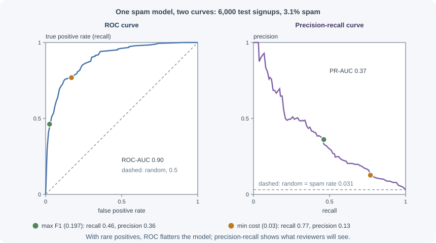

Model Evaluation and Validation¶
A model is only as good as the evidence that it works. This lesson is about producing that evidence honestly: which metrics answer which questions, how to pick a decision threshold from real costs, how to estimate performance on data the model has not seen, whether its probabilities can be trusted, and what changes when the interesting class is rare.
The running example is a TaskFlow trust-and-safety model that scores new workspaces for spam (workspaces created to send spam invitations), where about 3% of signups are spam, plus a regression model that predicts how many hours a task will take. The tabular modelling itself is covered in tabular ML and gradient boosting; LLM-specific evaluation lives in building evaluation sets.
Why it matters¶
Evaluation decides what ships. A wrong metric produces a model that optimizes the wrong thing; a wrong split produces a score the model will never reach in production; uncalibrated probabilities produce thresholds and dashboards that lie. On the spam data in this lesson, a model that labels every signup "not spam" has 96.9% accuracy and catches nothing, and a cross-validation that mixes one workspace's sessions across folds reports ROC-AUC 0.958 for a model whose honest score is 0.725.
Evaluation is also how a team argues about trade-offs with numbers instead of opinions. "Recall 0.77 at precision 0.13, costing 988 needless reviews per 6,000 signups" is a decision a product owner can make. "The model is 90% accurate" is not.
Real-world usage¶
- ROC can mislead on imbalanced data. Saito and Rehmsmeier, The Precision-Recall Plot Is More Informative than the ROC Plot When Evaluating Binary Classifiers on Imbalanced Datasets (PLOS ONE, 2015), show that ROC plots can be visually deceptive when negatives vastly outnumber positives, while precision-recall plots predict future classification performance more accurately.
- Boosted trees and probabilities. Niculescu-Mizil and Caruana, Predicting Good Probabilities With Supervised Learning (ICML 2005), found that max-margin methods such as boosted trees push predicted probabilities away from 0 and 1 in a sigmoid-shaped distortion, and that Platt scaling or isotonic regression corrects it.
- Neural networks are often overconfident. Guo and others,
On Calibration of Modern Neural Networks
(2017), found modern deep networks poorly calibrated and temperature
scaling, a one-parameter variant of Platt scaling, surprisingly effective.
scikit-learn added
method="temperature"toCalibratedClassifierCVin version 1.8. - Cross-validation assumptions. The scikit-learn cross-validation guide notes that the independent and identically distributed assumption behind plain k-fold rarely holds in practice, and provides group and time-series splitters for that reason.
- AUC as a ranking probability. The Google Machine Learning Crash Course explains AUC as the probability that the model ranks a randomly chosen positive example above a randomly chosen negative one.
Popular tools and providers: scikit-learn (metrics,
model_selection, calibration), the evaluation metrics built into
LightGBM and XGBoost, imbalanced-learn, Optuna for tuning with
cross-validation, MLflow and Weights & Biases for tracking runs and metrics
(see experiment tracking and model registry),
and Evidently AI for monitoring metrics after deployment.
How it works¶
Baselines first¶
Every metric needs a reference point. Before training anything, compute what trivial predictors score:
| Task | Baseline | What it scores on the TaskFlow data |
|---|---|---|
| Classification | Always predict the majority class (DummyClassifier("most_frequent")) |
Accuracy 0.969, recall 0, PR-AUC 0.031 |
| Classification | Predict the class frequency (DummyClassifier("prior")) |
ROC-AUC 0.5, PR-AUC = positive rate |
| Regression | Training mean or median (DummyRegressor) |
MAE 7.79 h (mean), 6.37 h (median) |
| Regression | A domain rule: the user's own estimate | MAE 5.60 h |
| Any | The model currently in production | The bar a new model must clear |
A model that cannot clearly beat the best simple baseline is not ready, however sophisticated it is. The domain rule is often the hardest baseline to beat and the easiest to explain.
The confusion matrix and threshold metrics¶
A classifier outputs a score; a threshold turns it into a decision. Each decision falls into one of four cells, and every threshold metric is a ratio of those cells.
![Diagram: the spam model at the max-F1 threshold of 0.197 on 6,000 test signups. The confusion matrix shows 86 true positives (spam caught), 100 false negatives (spam missed), 152 false positives (false alarms), and 5,662 true negatives. A callout shows the accuracy trap: always predicting not spam scores accuracy 0.969, higher than this model's 0.958, yet catches no spam, while this model catches 86 of 186. Below, precision is 86 over 238, 0.361; recall is 86 over 186, 0.462; F1 is 172 over 424, 0.406; the false positive rate is 152 over 5,814, 0.026; and accuracy is 5,748 over 6,000, 0.958.](../confusion-matrix-metrics.svg)
| Metric | Formula | Answers | Use when |
|---|---|---|---|
| Precision | TP / (TP + FP) | Of the flagged, how many were right? | False alarms are expensive (reviewer time, blocked users) |
| Recall (sensitivity, TPR) | TP / (TP + FN) | Of the real positives, how many were caught? | Misses are expensive (fraud, abuse, safety) |
| F1 | 2TP / (2TP + FP + FN) | Harmonic mean of precision and recall | One number when both matter equally |
| F-beta | weights recall beta times as much as precision | Recall-heavy (beta 2) or precision-heavy (beta 0.5) trade-off | Costs are unequal but not quantified |
| False positive rate | FP / (FP + TN) | Of the negatives, how many were flagged? | Reading ROC curves |
| Accuracy | (TP + TN) / all | Share of correct decisions | Only for roughly balanced classes |
These numbers depend on the threshold. Report them together with the threshold, the number of positives, and the base rate, or they cannot be compared.
Ranking metrics: ROC-AUC and PR-AUC¶
Ranking metrics summarize every threshold at once.
- ROC curve: true positive rate against false positive rate as the threshold moves. ROC-AUC is the probability that a random positive is scored above a random negative: 0.5 is random, 1.0 is perfect.
- Precision-recall curve: precision against recall. PR-AUC, usually
computed as average precision (
average_precision_score), has a random baseline equal to the positive rate, not 0.5.

The same model scores ROC-AUC 0.90 and PR-AUC 0.37. Both are correct; they answer different questions. ROC uses the false positive rate, whose denominator is the 5,814 legitimate signups, so 988 false alarms look like "only 17%". Precision uses the flagged signups as its denominator, so the same 988 false alarms dominate: 143 spam among 1,131 flags. With rare positives, PR-AUC reflects what reviewers will experience; ROC-AUC is still useful for comparing rankers and is stable across base rates.
Log loss and the Brier score evaluate the probabilities themselves, not a ranking or a threshold; they come back under calibration.
Choosing a threshold¶
The default threshold of 0.5 is rarely right. Choose it from costs, on the validation set, and report its effect once on the test set.
If a missed spam workspace costs C_FN and a needless review costs C_FP,
then for calibrated probabilities the expected-cost-minimizing rule is to
flag when p > C_FP / (C_FP + C_FN). With a miss 25 times as costly as a
review, that is 1 / 26 = 0.038. Empirically scanning thresholds on the
validation set found 0.03, close to the theory because the logistic
regression's probabilities are well calibrated.
Other common rules:
- Fixed recall or precision: "catch at least 80% of spam" or "at least 90% of flags must be real"; read the threshold off the validation curve.
- Capacity: "the review team can handle 200 flags a day"; take the top 200 scores (precision at k).
- Max F1: a reasonable default when costs are unknown, but it encodes an arbitrary trade-off.
The threshold is part of the model. Version it, and revisit it whenever the base rate, the costs, or the model changes.
Regression metrics¶
| Metric | Definition | Behaviour |
|---|---|---|
| MAE | mean of absolute errors | In the target's units; robust to outliers; minimized by the median |
| RMSE | square root of the mean squared error | In the target's units; dominated by large errors; minimized by the mean |
| MAPE | mean of absolute errors divided by the actual value | Scale-free, but explodes near zero and penalizes over-prediction more |
| R-squared | 1 minus squared error relative to predicting the mean | 0 means no better than the mean; can be negative |
Choose the metric that matches the cost of an error. If a task estimate
that is 10 hours off is ten times as bad as one that is 1 hour off, use
MAE; if it is a hundred times as bad, use RMSE. Train with the matching
loss: LightGBM's objective="l1" predicts the median and minimizes MAE.
The practical example shows how 2% of tasks that were forgotten for weeks
make RMSE useless for comparing models and distort a squared-error model.
Cross-validation¶
A single validation split gives one noisy number. K-fold cross-validation trains k models, each tested on a different fold, and reports the mean and the spread. It costs k times the training, and its estimate is only as honest as its splitter:
![Diagram: three cross-validation splitters drawn as grids with one row per fold. KFold or StratifiedKFold shuffles rows into five folds with scattered test cells, which is fine for independent rows; stratified folds keep 3 percent spam in each fold. GroupKFold labels cells by workspace, A to J with two sessions each, and every fold holds out whole workspaces; on the same 12,000 sessions, shuffled KFold reports ROC-AUC 0.958 while GroupKFold reports 0.725. TimeSeriesSplit orders cells by time: each fold trains on all earlier cells and tests on the next block, with later cells unused, so the training window grows from fold 1 to fold 4.](../cross-validation-schemes.svg)
| Splitter | Use when | Note |
|---|---|---|
StratifiedKFold |
Independent rows, classification | Keeps the class ratio in every fold; the default for classifiers |
GroupKFold, StratifiedGroupKFold |
Several rows per user, workspace, or document | No entity appears on both sides |
TimeSeriesSplit |
Order matters: forecasts, drift | Expanding window; gap skips rows between train and test |
| Repeated or nested CV | Small data; tuning and estimating at once | Nested CV keeps hyperparameter search out of the outer estimate |
Two rules keep cross-validation honest. Everything learned from data (scalers, encoders, feature selection, target encodings) must be fitted inside each fold, which a scikit-learn pipeline does automatically. And tuning on the same folds you report is optimistic: either use nested cross-validation or keep a separate test set.
How much does a difference matter? The fold-to-fold standard deviation and a bootstrap confidence interval on the test set put a size on the noise. In the examples, PR-AUC varies by 0.016 to 0.020 between folds, and the test PR-AUC of 0.374 has a 95% bootstrap interval of 0.300 to 0.456 with 186 spam signups. A 0.01 improvement is noise at this size.
Calibration¶
A model is calibrated when its probabilities match frequencies: of all signups scored 0.2, about 20% are spam. Calibration matters whenever a probability is used as a number: cost-based thresholds, expected-value ranking, risk shown to users, or combining models.
![Diagram: a reliability diagram for three versions of the LightGBM spam model on 6,000 test signups, using 8 equal-size bins; a perfectly calibrated model lies on the dashed diagonal. Plain LightGBM stays close to the diagonal. The model trained with scale_pos_weight 31.3 lies far below it: in its top bin it predicts 0.75 on average while only 0.17 are spam. After isotonic calibration on the validation set the points return to the diagonal. A table lists test results: plain ROC-AUC 0.899, mean prediction 0.032, Brier 0.0252, ECE 0.011; weighted ROC-AUC 0.898, mean prediction 0.156, Brier 0.0789, ECE 0.125; calibrated ROC-AUC 0.894, mean prediction 0.032, Brier 0.0241, ECE 0.002; true spam rate 0.031.](../calibration-reliability.svg)
How to measure it:
- Reliability diagram: bin predictions, plot mean prediction against
observed frequency (
sklearn.calibration.calibration_curve). - Brier score: mean squared error of the probability (lower is better).
- Log loss: heavily penalizes confident mistakes.
- Expected calibration error (ECE): the average gap between confidence and frequency, weighted by bin size.
- Mean prediction against base rate: the quickest sanity check.
How to fix it, always on data not used to train the model:
| Method | What it fits | Best for |
|---|---|---|
| Sigmoid (Platt scaling) | A logistic curve on the scores | Sigmoid-shaped distortion; small calibration sets |
| Isotonic regression | A monotonic step function | Any monotonic distortion, with more than about 1,000 samples |
| Temperature scaling | One divisor on the logits | Neural networks; multiclass |
In scikit-learn 1.9, calibrate an already-trained model by wrapping it in
FrozenEstimator and fitting CalibratedClassifierCV on a held-out set;
the older cv="prefit" option no longer exists. Calibration preserves the
ranking (ROC-AUC barely moves), so it never fixes a weak model, only its
probabilities.
Class imbalance¶
Rare positives change evaluation more than training:
- Metrics: use PR-AUC, recall at a fixed precision, or cost, not accuracy. Report the base rate next to every number.
- Enough positives: a test set with 30 positives cannot distinguish models; stratify splits and check confidence intervals.
- Class weights (
class_weight="balanced",scale_pos_weight) and resampling (oversampling, undersampling, SMOTE) shift the decision boundary and can help a model learn the rare class. They also inflate the predicted probabilities: the weighted model's mean prediction is 0.156 for a 3.1% spam rate. Recalibrate afterwards. - Threshold moving is often enough on its own: a well-ranked model with a lower threshold achieves the same trade-off without distorting probabilities.
- Resample only the training data, never the validation or test sets, or the metrics describe a world that does not exist.
Offline and online evaluation¶
Offline metrics estimate how a model would have performed on held-out history. Online evaluation measures what it does to the product: review queue length, spam reports per 1,000 workspaces, sign-up conversion. Validate offline, then confirm with a shadow deployment (score but do not act) and a controlled rollout or A/B test, and keep slicing results by segment (new versus existing customers, regions, signup source) because an average can hide a group the model fails.
When to use and when not to use¶
| Your question | Metric | Avoid |
|---|---|---|
| Does it rank positives above negatives? | ROC-AUC | Using it alone with rare positives |
| How useful are its flags when positives are rare? | PR-AUC, precision at k | Accuracy |
| Is this specific threshold acceptable? | Precision, recall, cost at that threshold | Reporting them without the threshold |
| Can its probabilities be used as numbers? | Brier, log loss, reliability diagram, ECE | Trusting predict_proba after reweighting |
| How far off are numeric predictions? | MAE (typical error), RMSE (large errors) | MAPE near zero values |
| Is model B really better than A? | Same folds, fold spread, bootstrap interval | One split and one decimal place |
| Does it help users? | Online metrics in an A/B test | Assuming offline gains carry over |
Practical examples¶
The code was tested with Python 3.12, scikit-learn 1.9.1, pandas 3.1.1, and LightGBM 4.7.0 in November 2026. All data is synthetic.
cd ml
python -m venv .venv && source .venv/bin/activate
pip install scikit-learn pandas lightgbm
python make_signups.py
Synthetic signups and a shared split¶
# ml/make_signups.py: synthetic TaskFlow workspace signups, about 3% later confirmed as spam
from pathlib import Path
import numpy as np
import pandas as pd
rng = np.random.default_rng(11)
n = 30_000
verified = rng.random(n) < 0.8
domain_age_days = np.round(rng.lognormal(6, 1.5, n)) # age of the email domain
invites_1h = rng.poisson(1.5, n) # invitations sent in the first hour
external_domains = rng.poisson(0.6, n) # distinct outside domains invited
links_in_tasks = rng.poisson(0.8, n) # URLs in the first tasks
tasks_1h = rng.poisson(3, n)
signup_hour = rng.integers(0, 24, n)
logit = (-5.9 + 0.9 * invites_1h + 1.6 * np.log1p(links_in_tasks) + 2.6 * ~verified
- 0.8 * np.log1p(domain_age_days / 30) + 1.5 * (external_domains >= 3)
+ 0.8 * ((signup_hour < 6) & ~verified) + rng.normal(0, 0.5, n))
spam = rng.random(n) < 1 / (1 + np.exp(-logit))
signups = pd.DataFrame({
"verified_email": verified.astype(int), "domain_age_days": domain_age_days,
"invites_1h": invites_1h, "external_domains": external_domains,
"links_in_tasks": links_in_tasks, "tasks_1h": tasks_1h, "signup_hour": signup_hour,
"spam": spam.astype(int),
})
Path("data").mkdir(exist_ok=True)
signups.to_csv("data/signups.csv", index=False)
print(signups.shape, f"spam rate {signups['spam'].mean():.3f}")
$ python make_signups.py
(30000, 8) spam rate 0.031
# ml/common.py: one stratified train/validation/test split of the signup data, shared by the scripts
import lightgbm as lgb
import pandas as pd
from sklearn.model_selection import train_test_split
data = pd.read_csv("data/signups.csv")
X, y = data.drop(columns="spam"), data["spam"]
X_tr, X_rest, y_tr, y_rest = train_test_split(X, y, test_size=0.4, stratify=y, random_state=0)
X_va, X_te, y_va, y_te = train_test_split(X_rest, y_rest, test_size=0.5, stratify=y_rest,
random_state=0)
def lightgbm(**extra):
return lgb.LGBMClassifier(n_estimators=300, learning_rate=0.05, num_leaves=15,
random_state=0, verbose=-1, **extra)
Signups arrive independently and the spam pattern is stable in this data,
so a stratified random split (60/20/20) is appropriate; with drift, split
by time as in the tabular lesson. stratify keeps 3.1% spam in every
part.
Baselines and the main metrics¶
# ml/evaluate.py: baselines and the main classification metrics on the validation set
from sklearn.dummy import DummyClassifier
from sklearn.linear_model import LogisticRegression
from sklearn.metrics import (accuracy_score, average_precision_score, brier_score_loss, f1_score,
precision_score, recall_score, roc_auc_score)
from sklearn.pipeline import make_pipeline
from sklearn.preprocessing import StandardScaler
from common import X_tr, X_va, lightgbm, y_tr, y_va
models = {
"always 'not spam'": DummyClassifier(strategy="most_frequent"),
"logistic regression": make_pipeline(StandardScaler(), LogisticRegression(max_iter=1000)),
"LightGBM": lightgbm(),
}
print(f"validation: {len(y_va)} signups, {y_va.sum()} spam ({y_va.mean():.1%})")
print(f"{'model':20} {'accuracy':>8} {'precision':>9} {'recall':>6} {'F1':>5} "
f"{'ROC-AUC':>7} {'PR-AUC':>6} {'Brier':>6}")
for name, model in models.items():
p = model.fit(X_tr, y_tr).predict_proba(X_va)[:, 1]
pred = (p >= 0.5).astype(int) # the default threshold
print(f"{name:20} {accuracy_score(y_va, pred):8.3f} "
f"{precision_score(y_va, pred, zero_division=0):9.3f} {recall_score(y_va, pred):6.3f} "
f"{f1_score(y_va, pred):5.3f} {roc_auc_score(y_va, p):7.3f} "
f"{average_precision_score(y_va, p):6.3f} {brier_score_loss(y_va, p):6.4f}")
$ python evaluate.py
validation: 6000 signups, 186 spam (3.1%)
model accuracy precision recall F1 ROC-AUC PR-AUC Brier
always 'not spam' 0.969 0.000 0.000 0.000 0.500 0.031 0.0310
logistic regression 0.969 0.510 0.134 0.213 0.917 0.351 0.0243
LightGBM 0.970 0.529 0.194 0.283 0.907 0.340 0.0247
Three lessons in four lines. Accuracy cannot tell the three models apart. At the default threshold of 0.5 both real models catch under 20% of spam, which says more about the threshold than the models. And on ranking, the logistic regression is as good as LightGBM here: the signals are mostly additive, and the simpler model is easier to explain to the trust-and-safety team, so it becomes the candidate.
A threshold from costs¶
# ml/thresholds.py: choose the decision threshold on validation, report it once on test
import numpy as np
from sklearn.linear_model import LogisticRegression
from sklearn.metrics import average_precision_score, confusion_matrix, precision_recall_curve
from sklearn.pipeline import make_pipeline
from sklearn.preprocessing import StandardScaler
from common import X_te, X_tr, X_va, y_te, y_tr, y_va
model = make_pipeline(StandardScaler(), LogisticRegression(max_iter=1000)).fit(X_tr, y_tr)
p_va, p_te = model.predict_proba(X_va)[:, 1], model.predict_proba(X_te)[:, 1]
COST_FN, COST_FP = 25, 1 # a missed spam workspace costs as much as 25 needless reviews
def cost(y, p, t):
return COST_FN * ((p < t) & (y == 1)).sum() + COST_FP * ((p >= t) & (y == 0)).sum()
grid = np.round(np.arange(0.01, 0.90, 0.01), 2)
t_cost = grid[np.argmin([cost(y_va, p_va, t) for t in grid])]
prec, rec, thr = precision_recall_curve(y_va, p_va)
f1 = 2 * prec[:-1] * rec[:-1] / np.maximum(prec[:-1] + rec[:-1], 1e-12)
t_f1 = thr[np.argmax(f1)]
print(f"cost-optimal threshold for calibrated scores: {COST_FP / (COST_FP + COST_FN):.3f}")
print(f"chosen on validation: max F1 at {t_f1:.3f}, min cost at {t_cost:.2f}")
print(f"test: {len(y_te)} signups, {y_te.sum()} spam")
for label, t in [("default 0.5", 0.5), ("max F1", t_f1), ("min cost", t_cost)]:
tn, fp, fn, tp = confusion_matrix(y_te, p_te >= t).ravel()
print(f"{label:12} TP {tp:3} FP {fp:4} FN {fn:3} TN {tn:5} precision {tp / (tp + fp):.3f}"
f" recall {tp / (tp + fn):.3f} cost {cost(y_te, p_te, t)}")
rng = np.random.default_rng(0)
idx = np.arange(len(y_te))
boot = [average_precision_score(y_te.iloc[s], p_te[s])
for s in (rng.choice(idx, size=len(idx)) for _ in range(1000))]
lo, hi = np.percentile(boot, [2.5, 97.5])
print(f"test PR-AUC {average_precision_score(y_te, p_te):.3f}, 95% bootstrap interval {lo:.3f}-{hi:.3f}")
$ python thresholds.py
cost-optimal threshold for calibrated scores: 0.038
chosen on validation: max F1 at 0.197, min cost at 0.03
test: 6000 signups, 186 spam
default 0.5 TP 37 FP 30 FN 149 TN 5784 precision 0.552 recall 0.199 cost 3755
max F1 TP 86 FP 152 FN 100 TN 5662 precision 0.361 recall 0.462 cost 2652
min cost TP 143 FP 988 FN 43 TN 4826 precision 0.126 recall 0.769 cost 2063
test PR-AUC 0.374, 95% bootstrap interval 0.300-0.456
The cost-based threshold catches 143 of 186 spam workspaces instead of 37, at the price of 988 reviews, and cuts the total cost from 3,755 to 2,063. Whether that is acceptable is a product decision; the table makes it an informed one. The thresholds were chosen on validation, so the test numbers are an honest preview, and the bootstrap interval shows how uncertain even that preview is with 186 positives.
Calibration after class weights¶
# ml/calibration.py: class weights change the scores; calibration on held-out data fixes them
import numpy as np
from sklearn.calibration import CalibratedClassifierCV, calibration_curve
from sklearn.frozen import FrozenEstimator
from sklearn.metrics import average_precision_score, brier_score_loss, log_loss, roc_auc_score
from common import X_te, X_tr, X_va, lightgbm, y_te, y_tr, y_va
ratio = (y_tr == 0).sum() / (y_tr == 1).sum()
plain = lightgbm().fit(X_tr, y_tr)
weighted = lightgbm(scale_pos_weight=ratio).fit(X_tr, y_tr) # "balance" the classes
calibrated = CalibratedClassifierCV(FrozenEstimator(weighted), method="isotonic").fit(X_va, y_va)
def ece(y, p, bins=10):
"""Expected calibration error: average gap between confidence and frequency, per bin."""
edges = np.quantile(p, np.linspace(0, 1, bins + 1))
which = np.clip(np.searchsorted(edges, p, side="right") - 1, 0, bins - 1)
return sum(abs(p[which == b].mean() - y[which == b].mean()) * (which == b).mean()
for b in range(bins) if (which == b).any())
print(f"scale_pos_weight = {ratio:.1f}; test spam rate {y_te.mean():.3f}")
print(f"{'model':22} {'ROC-AUC':>7} {'PR-AUC':>6} {'mean p':>6} {'Brier':>6} {'log loss':>8} {'ECE':>6}")
for name, model in [("LightGBM", plain), ("+ scale_pos_weight", weighted),
("+ isotonic on val", calibrated)]:
p = model.predict_proba(X_te)[:, 1]
print(f"{name:22} {roc_auc_score(y_te, p):7.3f} {average_precision_score(y_te, p):6.3f} "
f"{p.mean():6.3f} {brier_score_loss(y_te, p):6.4f} {log_loss(y_te, p):8.3f} "
f"{ece(y_te.to_numpy(), p):6.3f}")
observed, predicted = calibration_curve(y_te, p, n_bins=5, strategy="quantile")
print(" bins (predicted -> observed): "
+ ", ".join(f"{a:.2f}->{b:.2f}" for a, b in zip(predicted, observed)))
$ python calibration.py
scale_pos_weight = 31.3; test spam rate 0.031
model ROC-AUC PR-AUC mean p Brier log loss ECE
LightGBM 0.899 0.333 0.032 0.0252 0.099 0.011
bins (predicted -> observed): 0.00->0.00, 0.00->0.00, 0.00->0.01, 0.01->0.02, 0.14->0.13
+ scale_pos_weight 0.898 0.356 0.156 0.0789 0.249 0.125
bins (predicted -> observed): 0.00->0.00, 0.01->0.00, 0.03->0.01, 0.14->0.02, 0.61->0.13
+ isotonic on val 0.894 0.330 0.032 0.0241 0.101 0.002
bins (predicted -> observed): 0.00->0.00, 0.00->0.01, 0.01->0.01, 0.04->0.03, 0.17->0.16
What the numbers show:
- Plain LightGBM with log loss is already close to calibrated: mean prediction 0.032 for a 0.031 spam rate.
scale_pos_weightbarely changes the ranking (ROC-AUC 0.898) but multiplies the scores: a top-bin signup scored 0.61 is spam only 13% of the time, and Brier and log loss get much worse. Any cost-based threshold computed from these scores would be wrong.- Isotonic calibration on the validation set restores honest
probabilities (ECE 0.002) without retraining.
FrozenEstimatortells scikit-learn the model is already trained; the validation set has 6,000 rows, comfortably above the roughly 1,000 that isotonic calibration needs.
Cross-validation, and the cost of the wrong splitter¶
# ml/cross_validation.py: fold-to-fold spread, and why repeated rows per workspace need GroupKFold
import numpy as np
from sklearn.linear_model import LogisticRegression
from sklearn.model_selection import GroupKFold, KFold, StratifiedKFold, cross_val_score, cross_validate
from sklearn.pipeline import make_pipeline
from sklearn.preprocessing import StandardScaler
from common import X, lightgbm, y
cv = StratifiedKFold(n_splits=5, shuffle=True, random_state=0)
for name, model in [("logistic regression", make_pipeline(StandardScaler(),
LogisticRegression(max_iter=1000))),
("LightGBM", lightgbm())]:
r = cross_validate(model, X, y, cv=cv, scoring=["roc_auc", "average_precision"])
auc, ap = r["test_roc_auc"], r["test_average_precision"]
print(f"{name:20} ROC-AUC {auc.mean():.3f} +/- {auc.std():.3f} "
f"PR-AUC {ap.mean():.3f} +/- {ap.std():.3f} folds {np.round(ap, 3)}")
# Session-level rows: 8 sessions per workspace, the label belongs to the workspace.
rng = np.random.default_rng(3)
n_ws, per = 1_500, 8
profile = rng.normal(size=(n_ws, 4)) # what each workspace looks like
label = (profile[:, 0] + rng.normal(0, 1.5, n_ws) > 2.0).astype(int)
groups = np.repeat(np.arange(n_ws), per)
X_s = profile[groups] + rng.normal(0, 0.05, (n_ws * per, 4)) # sessions of one workspace look alike
y_s = label[groups]
for name, splitter in [("KFold, sessions shuffled", KFold(5, shuffle=True, random_state=0)),
("GroupKFold by workspace", GroupKFold(5))]:
by_group = groups if isinstance(splitter, GroupKFold) else None
s = cross_val_score(lightgbm(), X_s, y_s, cv=splitter, groups=by_group, scoring="roc_auc")
print(f"{name:26} ROC-AUC {s.mean():.3f}")
$ python cross_validation.py
logistic regression ROC-AUC 0.914 +/- 0.006 PR-AUC 0.388 +/- 0.020 folds [0.398 0.394 0.351 0.411 0.386]
LightGBM ROC-AUC 0.915 +/- 0.003 PR-AUC 0.387 +/- 0.016 folds [0.406 0.389 0.373 0.402 0.365]
KFold, sessions shuffled ROC-AUC 0.958
GroupKFold by workspace ROC-AUC 0.725
The first two lines confirm the earlier comparison with less noise: the two
models are indistinguishable, and the fold spread (about 0.02 PR-AUC) is
larger than their difference. The last two lines are the important ones.
When the eight sessions of one workspace sit on both sides of a fold, the
model recognizes the workspace instead of learning what spam looks like,
and the estimate jumps from 0.725 to 0.958. GroupKFold keeps every
workspace in a single fold.
Regression metrics and outliers¶
# ml/regression_metrics.py: MAE, RMSE, and MAPE for "hours to finish a task", against baselines
import lightgbm as lgb
import numpy as np
from sklearn.dummy import DummyRegressor
from sklearn.metrics import (mean_absolute_error, mean_absolute_percentage_error, r2_score,
root_mean_squared_error)
from sklearn.model_selection import train_test_split
rng = np.random.default_rng(5)
n = 8_000
estimate = np.round(rng.lognormal(1.3, 0.7, n), 1)
subtasks = rng.poisson(1.5, n)
actual = estimate * rng.lognormal(0.15, 0.35, n) + 0.8 * subtasks # usually a bit over
forgotten = rng.random(n) < 0.02 # left open for weeks
actual = np.where(forgotten, actual + rng.uniform(40, 200, n), actual)
X = np.column_stack([estimate, subtasks])
X_tr, X_te, y_tr, y_te, est_tr, est_te, _, forgot_te = train_test_split(
X, actual, estimate, forgotten, test_size=0.3, random_state=0)
predictions = {
"training mean": DummyRegressor(strategy="mean").fit(X_tr, y_tr).predict(X_te),
"training median": DummyRegressor(strategy="median").fit(X_tr, y_tr).predict(X_te),
"user's estimate": est_te,
"LightGBM, L2 loss": lgb.LGBMRegressor(n_estimators=200, learning_rate=0.05,
verbose=-1).fit(X_tr, y_tr).predict(X_te),
"LightGBM, L1 loss": lgb.LGBMRegressor(objective="l1", n_estimators=200, learning_rate=0.05,
verbose=-1).fit(X_tr, y_tr).predict(X_te),
}
print(f"{'prediction':18} {'MAE':>6} {'RMSE':>6} {'R2':>6} {'MAPE':>6}")
for name, p in predictions.items():
print(f"{name:18} {mean_absolute_error(y_te, p):6.2f} {root_mean_squared_error(y_te, p):6.2f} "
f"{r2_score(y_te, p):6.3f} {mean_absolute_percentage_error(y_te, p):6.1%}")
ok = ~forgot_te
print("RMSE without forgotten tasks: " + ", ".join(
f"{name} {root_mean_squared_error(y_te[ok], p[ok]):.2f}" for name, p in predictions.items()))
$ python regression_metrics.py
prediction MAE RMSE R2 MAPE
training mean 7.79 21.11 -0.000 131.1%
training median 6.37 21.54 -0.041 63.8%
user's estimate 5.60 21.40 -0.028 37.1%
LightGBM, L2 loss 6.63 21.05 0.006 81.7%
LightGBM, L1 loss 4.69 21.00 0.011 25.6%
RMSE without forgotten tasks: training mean 6.44, training median 5.89, user's estimate 4.09, LightGBM, L2 loss 5.47, LightGBM, L1 loss 3.28
Reading the table:
- RMSE and R-squared are dominated by the 2% of forgotten tasks: every predictor scores RMSE near 21 and R-squared near zero, so these metrics cannot rank the models.
- MAE separates them: the L1 model's typical error is 4.69 hours, better than the user's own estimate (5.60) and the median (6.37).
- The squared-error model was distorted in training by the same outliers: without the forgotten tasks its RMSE is 5.47, worse than the raw user estimate. The L1 objective ignores them and reaches 3.28.
- MAPE favours under-prediction and explodes for short tasks; report it only alongside MAE.
The real fix is upstream: a task left open for weeks is a labelling problem, not a prediction target. Stop the clock when work stops, or exclude such tasks from the label.
Best practices¶
- Fix the baselines first: majority class or prior, mean or median, a domain rule, and the current production model.
- Choose metrics with the people who pay for errors, and write down the costs of a false positive and a false negative.
- Use PR-AUC and precision or recall at a fixed operating point for rare positives; always report the base rate.
- Choose thresholds on validation data from costs or capacity, and version the threshold with the model.
- Pick the cross-validation splitter that matches how new data arrives: stratified for independent rows, group for repeated entities, time for anything ordered.
- Fit all preprocessing inside the cross-validation loop with pipelines.
- Report fold spread or bootstrap intervals, and do not celebrate differences smaller than the noise.
- Check calibration whenever a probability is used as a number; recalibrate after class weights or resampling.
- Slice every metric by important segments before and after launch.
- Confirm offline gains online with shadow mode or an A/B test.
In production¶
- The model's flags are mostly wrong. Detect: reviewer feedback shows low precision; the review queue grows. Cause: the threshold was chosen for a different base rate or with accuracy or ROC-AUC alone. Fix: recompute precision at the threshold on recent labelled data, choose the threshold from costs or capacity, and monitor precision weekly.
- Probabilities shown to users do not match reality. Detect: "80% risk" items fail far less than 80% of the time; mean prediction differs from the observed rate. Cause: class weights or resampling without recalibration, or drift since calibration. Fix: calibrate on recent held-out data (sigmoid, isotonic, or temperature) and track ECE or a reliability diagram over time.
- Offline gains vanish in the A/B test. Detect: a new model wins on cross-validation and loses online. Cause: leaky folds (groups or time mixed), tuning on the reported folds, or an offline metric unrelated to the business outcome. Fix: group or time splits, nested CV or a clean test set, and an online metric agreed in advance.
- A metric jumps after a data pipeline change. Detect: PR-AUC or MAE moves sharply with no model change. Cause: label definition or base-rate change (for example, spam reviews backlogged), or a broken feature. Fix: monitor base rate and input distributions next to the metric, and version label definitions.
- One customer segment is badly served. Detect: complaints from one region or plan; overall metrics look fine. Cause: averages hide a slice with a different base rate or feature distribution. Fix: evaluate and monitor per slice, set minimum per-slice targets, and add data for weak slices.
- Regression errors are reported as fine, but users see huge misses. Detect: MAE is stable while support tickets mention wildly wrong estimates. Cause: a heavy tail that MAE averages away. Fix: report error percentiles (p90, p99 absolute error) and RMSE next to MAE.
Important terminology¶
- Baseline: A trivial or existing predictor every model must beat.
- Confusion matrix: Counts of true and false positives and negatives at a threshold.
- Precision: The share of flagged items that are positive.
- Recall: The share of positive items that are flagged.
- F1 score: The harmonic mean of precision and recall.
- ROC-AUC: The probability that a random positive outranks a random negative.
- PR-AUC (average precision): The area under the precision-recall curve; its random baseline is the positive rate.
- MAE and RMSE: Mean absolute error and root mean squared error.
- Cross-validation: Repeated training and testing on different folds.
- Nested cross-validation: An inner loop for tuning inside an outer loop for estimation.
- Calibration: Agreement between predicted probabilities and observed frequencies.
- Brier score: The mean squared error of predicted probabilities.
- Expected calibration error (ECE): The bin-weighted average gap between confidence and frequency.
- Class imbalance: One class is much rarer than the other.
- Precision at k: The share of positives among the top k scores.
Common mistakes and misconceptions¶
- Reporting accuracy on rare-event problems.
- Comparing ROC-AUC across datasets with different base rates and concluding anything about precision.
- Quoting precision and recall without the threshold.
- Tuning hyperparameters and the threshold on the test set.
- Using plain k-fold when users, workspaces, or time repeat across rows.
- Fitting a scaler or encoder on all data before cross-validation.
- Treating
predict_probaas calibrated after reweighting or oversampling. - Oversampling the validation or test set.
- Declaring a winner from a 0.005 difference with no confidence interval.
- Using MAPE on targets that can be near zero.
Revision questions¶
- Why does the "always not spam" baseline beat the real model on accuracy, and which metrics expose it?
- A model flags 238 signups and 86 are spam; there are 186 spam signups in total. Compute precision, recall, and F1. (0.361, 0.462, 0.406.)
- A missed spam workspace costs 25 reviews. What threshold minimizes expected cost for calibrated probabilities, and why might the empirical optimum differ? (1/26 = 0.038.)
- Why can the same model have ROC-AUC 0.90 and PR-AUC 0.37?
- When do you use
GroupKFold, and what goes wrong without it? - What does
scale_pos_weightdo to predicted probabilities, and how do you repair them without retraining? - Why did RMSE fail to separate the regression models, and which metric did?
- What is nested cross-validation for?
Further learning¶
- scikit-learn: Metrics and scoring
- scikit-learn: Cross-validation
- scikit-learn: Probability calibration
- Google Machine Learning Crash Course: Thresholds and the confusion matrix
- Google Machine Learning Crash Course: ROC and AUC
- Next: time series and anomaly detection. Back to the machine learning foundations overview.